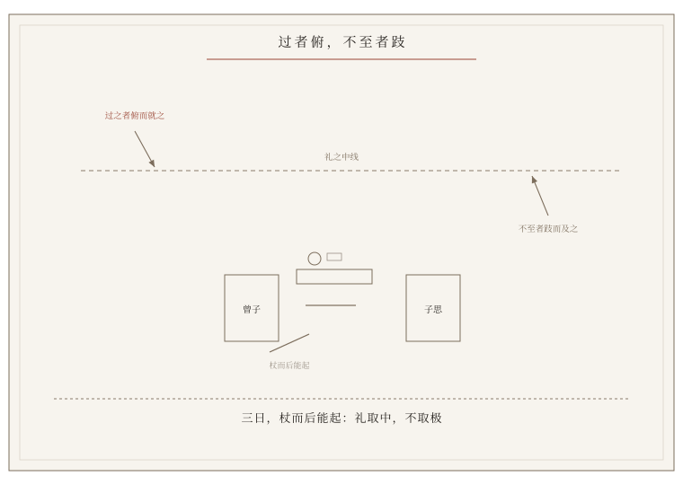

檀弓上 · 三·三十五 · 第 238 课
曾子谓子思曰：「伋，吾执亲之丧也，水浆不入于口者七日。」子思曰：「先王之制礼也，过之者俯而就之，不至焉者跂而及之。故君子之执亲之丧也，水浆不入于口者三日，杖而后能起。」注「言己以疾时礼而不如」「为曾子言难继，以礼抑之」。
说什么事：一个人夸自己能守，一个人用礼把他按回去。
落在哪一层：礼，兼及礼意与分寸。论「俯就」与「跂及」。
为何编在此位：上节辨古，此节辨中。辨古者不许以今例古，辨中者不许以己例人。
【经】曾子謂子思曰：「伋，吾執親之喪也，水漿不入於口者七日。」子思曰：「先王之制禮也，過之者俯而就之，不至焉者跂而及之。故君子之執親之喪也，水漿不入於口者三日，杖而後能起。」
【注】言己以疾时礼而不如。为曾子言难继，以礼抑之。
【疏】此一节论曾子疾时居丧不能以礼，子思以正礼抑之之事。曾子谓子思伋，夸己居亲之丧能行于礼，故云「吾水浆不入于口七日」，意疾时人行礼不如己也。故子思以正礼抑之，云：古昔先代圣王制其礼法，使后人依而行之，故贤者俯而就之，不肖者跂而及之；以水浆不入于口三日，尚以杖扶病。若曾子之言，即后人难为继也。
伋 子思名。注疏「曾子谓子思伋」。
水浆 水与浆。浆，米汤之属。
不入于口 七日不饮不食。
俯而就之 贤者俯身以就礼。
跂而及之 不肖者踮足以及礼。
杖而后能起 三日不食，须杖乃能起。
曾子对子思说：「伋，我执亲之丧，七天不喝一口水浆。」子思说：「先王制礼，超过的人俯身去就它，够不着的人踮脚去及它。所以君子执亲之丧，三天不进水浆，扶杖才能起身。」
此节一问一答言。曾子说七天，语气里有一分自许；子思不驳其行，只说「先王制礼」四字，然后给出三日的数。曾子所说的是自己的极限，子思所说的是众人可共守的常。疏一句点破：「若曾子之言，即后人难为继也」——一个榜样若不可学，它便不是礼。
第一层 七日与三日 曾子七日不食，是事实；子思说三日，是礼数。两者并不冲突：一个是个人所能，一个是众人所守。冲突只在曾子的口气：他把自己的所能当成了标准。
第二层 俯就与跂及 此八字是全节之骨。贤者过之，故须「俯」；不肖者不至，故须「跂」。礼是一条中线，两端的人各自向中间用力。此语最见礼的本质：不是取最高者为法，也不是取最低者为便。
第三层 难继之戒 注「为曾子言难继，以礼抑之」。此一层最要紧：一个人的苦行若成了众人的标准，结果是众人索性不做。礼宁可取三日而人人能行，不取七日而人人自弃。
第四层 杖而后能起 三日不食已须扶杖，则七日之状可知。子思不正面说「你太过」，只用「杖而后能起」一句，把三日的分量摆出来。此为言之术，亦为教之法。
与今日何干 凡立标准、树榜样，最易以少数人的极限为众人之常。此节给的尺是：礼须人人可及。榜样若只供仰望而不可学，它起的作用是让人放弃。
| 左 | 右 |
|---|---|
| 曾子：水浆不入于口者七日 | 个人之极限 |
| 子思：先王之制礼也 | 众人可共守之常 |
| 过之者俯而就之 | 贤者俯身以就中线 |
| 不至焉者跂而及之 | 不肖者踮足以及中线 |
| 三日，杖而后能起 | 礼数之中 |
| 后人难为继 | 榜样不可学则人自弃 |
画一间简素的室内，视点平。中央一张矮几，几上一只陶壶与一只空碗，壶塞未启，碗中无水。几左立着一位年长的士人（衣粗、面带饥色、一手扶几），身体略向前俯；几右坐着一位年轻些的士人（衣整、姿态端直），一手伸向几面，掌心向下，作按止之势。两人之间隔着小几。地上靠近几处放着一根木杖。不写文字、不画人面细节。赭色只用在陶壶的塞子与那根木杖的顶端。
